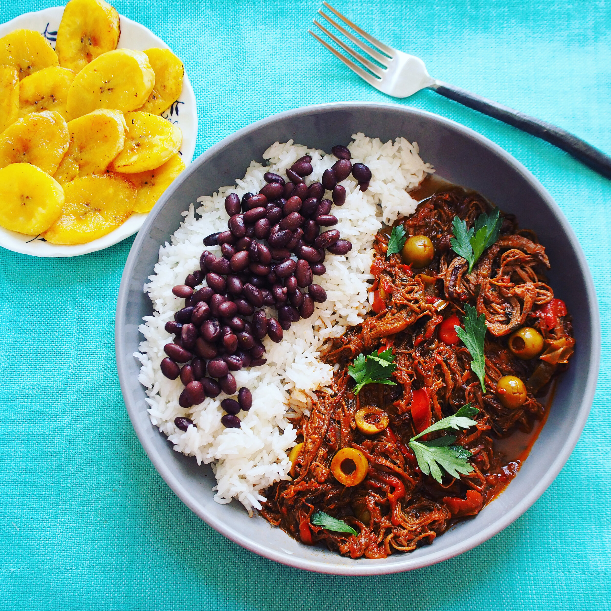
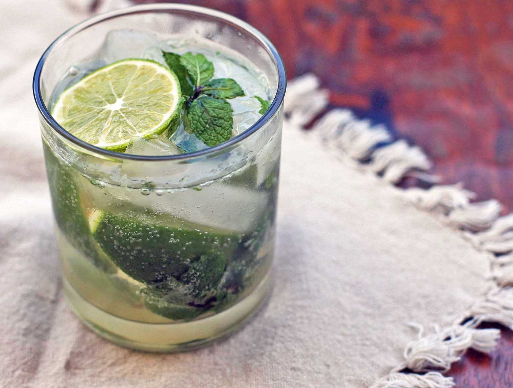
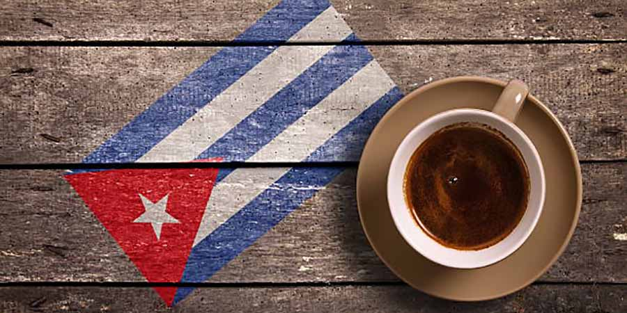
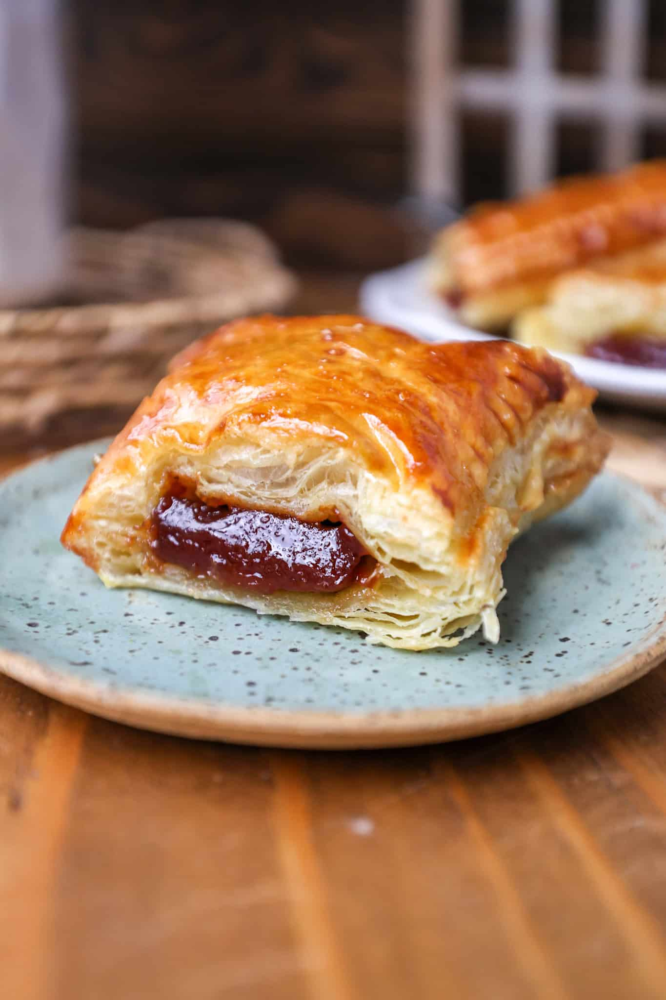

Cuban Dishes and Drinks
A trip to Cuba isn't complete without savoring the island's flavorful heritage. Let your taste buds dance with ropa vieja, a slow-cooked shredded beef dish bursting with spices and soul. Sample moros y cristianos—black beans and rice, symbolizing Cuba’s fusion of cultures in every bite. Street corners tempt with crunchy tostones and sizzling chicharrones, while seaside towns serve up fresh lobster grilled to perfection.
And to drink? Cool off with a minty mojito or a rum-fueled Cuba Libre, each cocktail telling its own story of sunshine and revolution. Don’t skip the guarapo, a refreshing sugarcane juice that captures Cuba’s agricultural roots, or the bold, rich Café Cubano—espresso with attitude.
Feast on Cuban Flavor
Cuban cuisine is a soulful blend of Spanish, African, and Caribbean influences, served with a side of history. Signature dishes like ropa vieja—shredded beef simmered in tomato and spices—tell stories of resilience and tradition. Lechón asado, slow-roasted pork marinated in citrusy mojo, is a centerpiece at celebrations. Staples like moros y cristianos (black beans and rice) and yuca con mojo (cassava with garlic sauce) round out meals with comforting depth. And don’t miss the iconic Cubano sandwich, layered with roast pork, ham, Swiss cheese, pickles, and mustard, pressed to crispy perfection.

Cocteles Cubanos
Cuba’s cocktail culture is legendary, with classics that have danced through decades. The mojito, a refreshing mix of rum, mint, lime, and soda water, is a Havana staple. The Cuba Libre, born from a toast to independence, blends rum, cola, and lime. For something elegant, try the El Presidente, a rum-based cocktail with vermouth and orange liqueur. Hemingway fans will love the Floridita Daiquiri, a tart and icy concoction served at his favorite Havana bar. Whether you sip them one on the beach or savor one on the dance floor, these rum based cocktails carry Cuban flavor in every mouthful.

The Cuban Cafecito
Coffee in Cuba is more than a beverage—it’s a ritual. Café Cubano, a strong espresso sweetened with whipped sugar foam (espumita), is served in tiny cups but packs a punch. For a creamier option, try a cortadito, espresso with a splash of steamed milk. Locals often share a colada, a larger serving meant for passing around with friends. Whether paired with a pastelito or sipped solo, Cuban coffee is a moment of connection.

Cuban Sweets
Cuba’s dessert scene is a celebration of its rich agricultural roots and love for bold, comforting flavors. With sugarcane as a national staple, Cuban sweets range from simple street snacks to indulgent pastries. Try the iconic pastelitos de guayaba—flaky puff pastries filled with sweet guava and cream cheese—or the silky flan Cubano, infused with cinnamon and caramel.
For something truly traditional, arroz con leche (rice pudding) offers creamy comfort with hints of vanilla and citrus zest. Street vendors tempt with crispy churros dipped in thick hot chocolate, while homemade favorites like dulce de leche cortada—a curdled milk caramel—show Cuba’s knack for turning humble ingredients into magic.
And don’t miss coquitos, chewy coconut balls often dipped in chocolate, or torticas de Morón, buttery shortbread cookies with lime and coconut flair.
